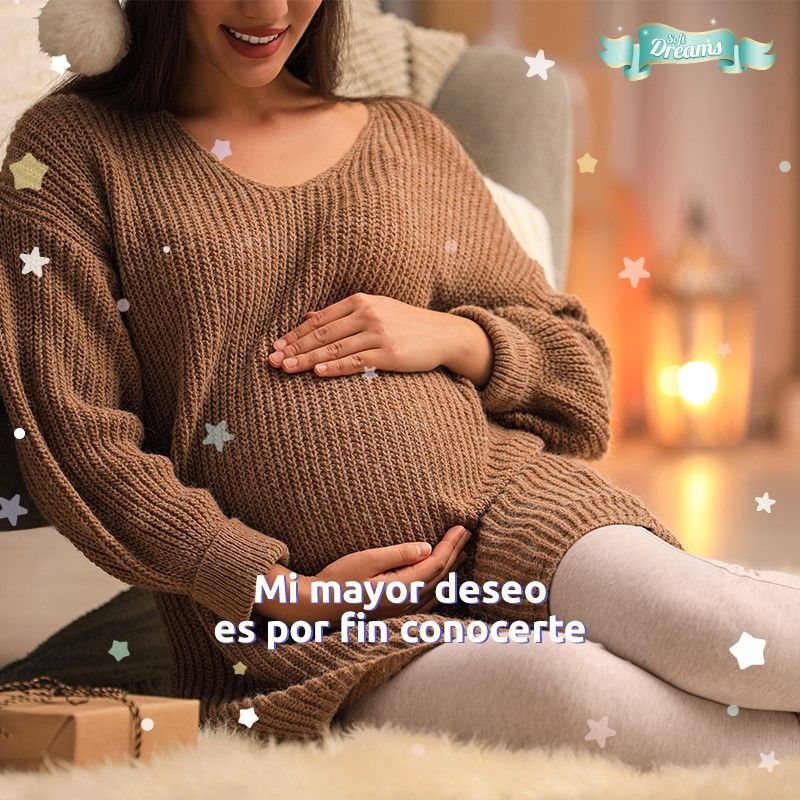
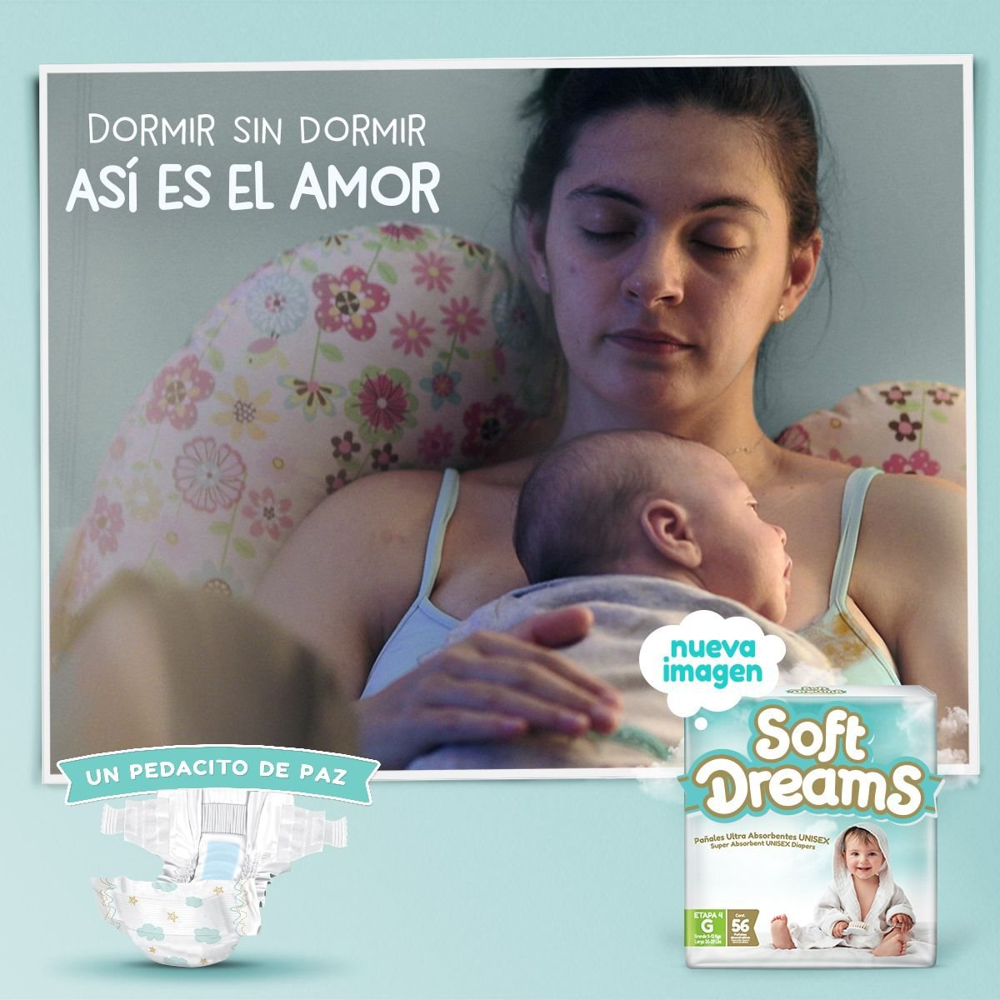
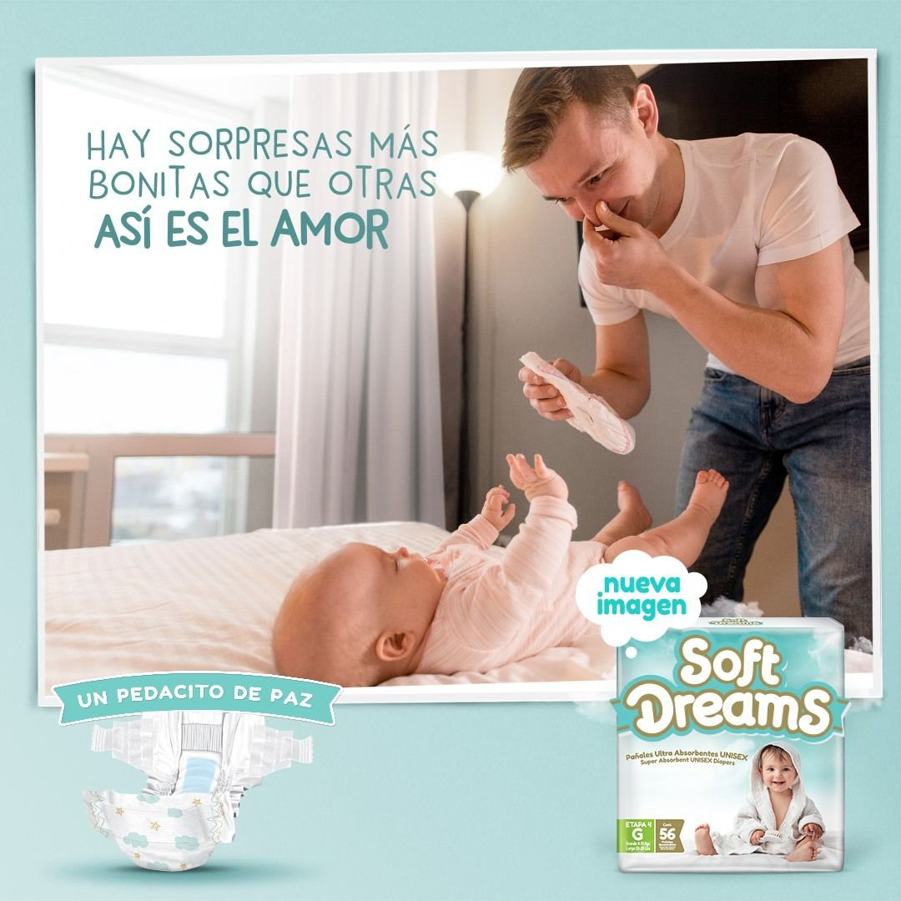

El contexto & el reto
Soft Dreams era una adquisición reciente de Grupo CMPC que jugaría en pañales premium en México: una marca genérica que ofrecía calidad, pero sin conexión con su audiencia.
El reto era construir un posicionamiento con base en un punto de conexión real con su target. Por eso empezamos por realizar estudios a profundidad.

El insight
Encontramos algo a la vez preocupante y emocionante: la gran mayoría de las mamás viven la maternidad, contradictoriamente, como una etapa de mucho amor pero también de muchísima soledad.
¿Por qué? Por la presión externa enorme sobre cómo «debe» ser la maternidad — más cercana a la perfección que en ninguna otra etapa.

La idea
«Un pedacito de paz» reconoce que la vida de una nueva mamá es, por lo menos, imperfecta — llena de preocupaciones, miedos y estrés.
Por eso, tu elección de pañal no debería ser una preocupación más, sino algo de lo cual no preocuparse.
Un concepto que actúa como base fundacional de un nuevo posicionamiento de marca.

El concepto, hecho film
Film de campaña «Un pedacito de paz».
Concepto fundacional de marca · Soft Dreams.